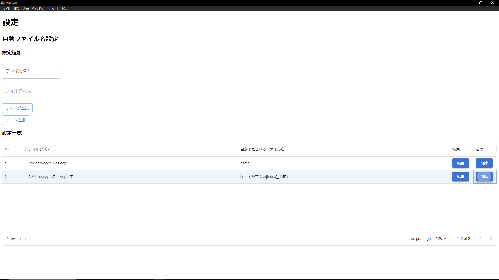

PDFSoftです。日々の課題提出の時短のために作りました。主にPDFの結合を目的としています。
課題プリントをスキャンしてできた複数のPDFを一つにまとめ、さらに名前を付けてナンバリングして保存...そんな手間をなくしたい、
そんな自分の思いに応えるために開発されたソフトです。

詳細
元々はElectron単体で作られていた前身のソフトがありました。ただそのソフトでPDF結合のみでPDF回転ができませんでした。
今回のソフトでは回転機能はもちろんテンプレート機能が新たに追加されました。
設定画面から新しくテンプレートを作成することができます。
結合時にテンプレートを選択すると自動で保存先のフォルダを選択して、自動命名もしてくれます。
同じ名前ではなくナンバリングしたい。そんな気持ちにも応えるべく、変数機能も追加されました。
[index]とファイル名内に記載すると、既に存在するPDFファイルを検知してナンバリングしてくれます。
これでわざわざ長い名前を打って「今回の課題は何回目の課題だろうか」と悩む必要もなくなります。
※PDF Splitなどのその他機能はまだ開発中です
苦労したところ
・初めてViteを導入したため設定作業が難航した。
・[index]機能関連での正規表現が複雑に絡まりあいすぎてえっぐい。
・パッケージ化したときのエラーの発生（現在進行形なので詳しい人教えてください。土下座します）
Githubリポジトリ
https://github.com/10tera/pdfsoft
担当
設計・コーディング
使用環境/主要ライブラリ
・Node.js(v16.7.0)
・electron(v23.1.2)
・PDF.js(v3.2.146)
・pdf-lib(v1.17.1)
・React(v18.2.0)
・@mui/material(v5.11.2)
など